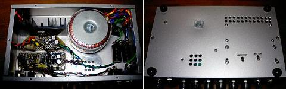
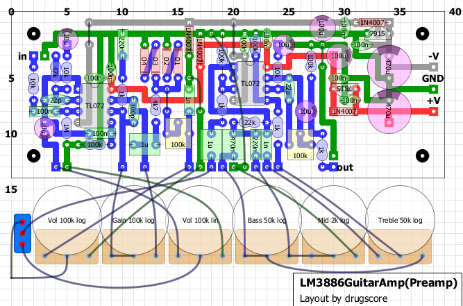
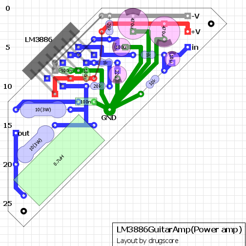

LM3886 Guitar Amp その2～製作編～
2009年11月05日 カテゴリー：ギターアンプ・ベースアンプ
・ケース（シャーシ）の加工
まずケースを加工していきます。今回はLEADのP-12というアルミシャーシです。加工の前に部品の基板レイアウトの作成やトランスなどの配置する位置の決定をしておきます。
↓は内部および底面の写真です。

真ん中下あたりの9個の穴は失敗の跡です。電源の電解コンデンサの放熱穴を開けたのですが、位置が悪くてポットがつけにくかったため電解コンデンサを移動しました。まぁ大して熱はないようですので移動先は穴を開けていません。ノイズ的にも今の位置（右側の黒いものが電解コンデンサです）の方が良さそうです。
パワーアンプICの放熱器の底にも穴を開けています。その3～完成編～に外観写真がありますが、内部に熱がこもらないように上面にも穴を開けました。穴が大きい（直径5mm）のでゴミが入り易くなってしまったかもしれません。金属片が入らないように網をつけた方がよいでしょう。
その他ポットやスイッチ、ジャックの穴も開けます。基板や放熱器の固定ネジの穴については、現物合わせで開けました。（ご覧の通り底にネジがたくさんつくことになるので、底板を上面のカバーとしています。）
今回は厚さ1mmのアルミシャーシだったため加工はアルミダイキャストよりだいぶ楽でした。本来はもう少し頑丈なケースがよいです。このケースの強度だと、落としたときトランスの重みでかなり曲がりそうです。
穴を開け終わった後の削りカスは、ショート事故の原因になりますので、入念に取り除いておきます。
・電源部
アンプ製作の最大の難関は電源部かもしれません。今回は真空管アンプではないのでそこまで電圧は高くありませんが、それでもショートするとバチッという火花が出ます（1度やってしまいました）。高電圧は本当に危険です。いろんなサイトに書かれていることですが、念のため主な注意点を書いておきます。
・通電時のアンプ内部を触る時は（テスターを使うときも）片手で操作する。＝両手の間に電流が流れないようにするため。もちろん足でシャーシやシールド線のプラグに触れていてもダメ。ギターで音を出しながら内部を操作するなんてダメ・ゼッタイ（ギターの弦＝アース）。
・電解コンデンサは電源を切ってもたくさん電気がたまっている。＝高電圧の電源になっている。通電状態と同じ扱い。
電源電圧を測定する場合の具体的な操作を以下に示します（片手で行います）。あらかじめテスターのリード線は目的の場所にクリップで固定しておくとよいと思います。
コンセントに電源プラグを差し込む→電源スイッチON→テスターで電圧を測る→電源スイッチOFF→コンセントから電源プラグを抜く→コンデンサに溜まった電荷を放出→テスターで電圧が下がったことを確認
※電解コンデンサに溜まった電荷を放出するには、コンデンサの両極に1kΩ程度の抵抗を当てます。電位差20Vぐらいなので電流は最大20mAぐらいです。
さて、前置きが長くなりましたが、電源部分の配線をしていきます。段階を踏むごとにいちいち電圧を測定します。
1)電源コードの作成→AC100V出ているか確認
2)ACインレット、ヒューズの取り付け→AC100V出ているか確認
3)スイッチの配線→AC100V出ているか確認
4)トランスに配線→トランスの2次巻き線にAC16Vぐらいが出ているか確認（電圧は少し高めに出るかもしれません）
5)整流用ブリッジダイオード、電源部の電解コンデンサの取付→DC22Vぐらいが出ているか確認
7)LEDの配線→LED点灯を確認、DC22Vぐらいが出ているか確認
部品の数は少ないのですが、慎重に作業するので時間がかかります。配線は必ず撚り合わせます。
私は「電源ON時たまにヒューズが切れる」というトラブルがありました。どこかがショートしているのかなぁといろいろ調べたのですが、結局1Aのヒューズを使ったのが原因だったみたいです。電源の電解コンデンサなしでもヒューズが切れる状態でした。2Aのヒューズにした場合全く切れることはなくなりました。トロイダルトランスは突入電流が多くなるとどこかのサイトで見た気がしますので、そのせいかもしれません。
・プリアンプ部とパワーアンプ部

プリアンプ部の部品レイアウトはこちら。（画像クリックで拡大）
※ディストーション部分のゲインが高すぎたため、R6(10kΩ)を削除（2014年6月15日）
特にこれといった工夫はないのですが、トリマーを基板の裏側につけることによりアンプ本体の底からドライバーで調整ができるようにしました（底面写真参照）。アース部分はもう少し取り回しを考えた方がよいかもしれません。やはり配線は撚り合わせるようにしています。そうすることで誘導ノイズが減らせるらしいです。オペアンプは入力インピーダンスが高いもの（NJM4558、TL072など）なら何でもOKです。今回は無駄に高級なOPA2604を使っています。

パワーアンプ部分の部品レイアウトはこちら。（画像クリックで拡大）
LM3886の足のピッチがちょうど斜めの基板に適合するので、基板全体を斜めにしてみました。なんちゃって1点アースですが、効果のほどは不明です。マイナス電源の100nFの積層セラミックコンデンサはスペースがなかったので基板の裏側につけました。0.7uHのコイルについては、単線をぐるぐる巻いて自作したものです。どのくらいの大きさに何回巻けばよいかわかる計算サイトがありますので、そこを利用しました。また、今回初めて放熱器の底面にタップを切る（ネジ穴を掘る）という作業に挑戦しています。垂直にできるか不安でしたが、割と上手くいったようです。
その1～構想編～に戻る
その3～完成編～に進む